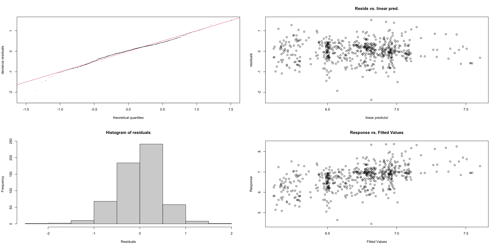
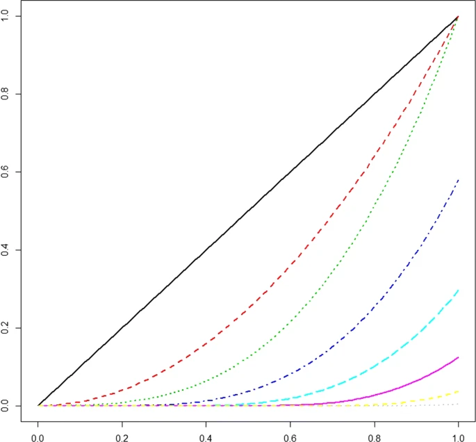
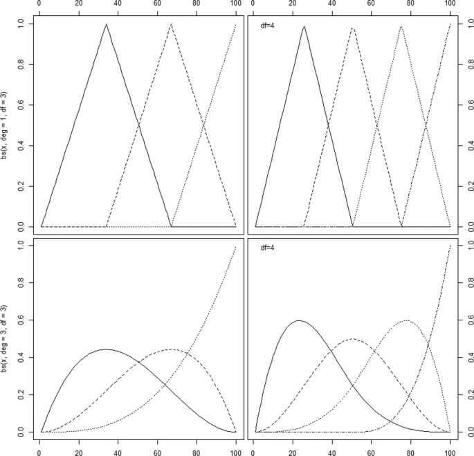
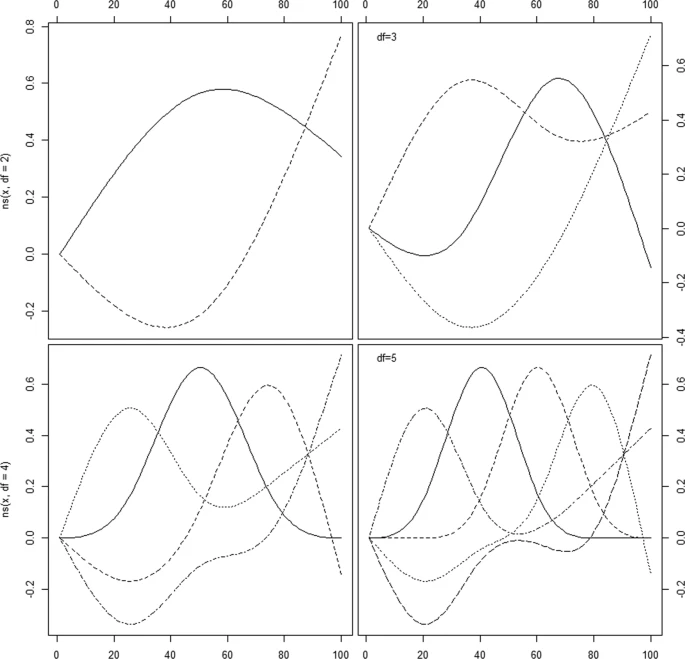

78 Generalized Additive Models (GAM)
TOC
- Misc
- Diagnostics
- Splines
- Interaction
78.1 Misc
- large gaps in the values of the predictor variable can be a problem if you are trying to interpolate between those gaps. (see bkmk, method = “reml” + s(x, m = 1))
78.2 Diagnostics
- “Deviance explained” is the R2 value for GAMs
mgcv::gam.check(gam_fit)
Method: GCV Optimizer: magic
Smoothing parameter selection converged after 19 iterations.
The RMS GCV score gradient at convergence was 5.938335e-08 .
The Hessian was positive definite.
Model rank = 21 / 22
Basis dimension (k) checking results. Low p-value (k-index<1) may
indicate that k is too low, especially if edf is close to k'.
k' edf k-index p-value
s(id) 1.00 0.35 0.82 <2e-16 ***
s(log_profit_rug_business_b) 9.00 8.52 1.01 0.69
s(log_profit_rug_business_b):treatment 10.00 1.50 1.01 0.62
---
Signif. codes: 0 ‘***’ 0.001 ‘**’ 0.01 ‘*’ 0.05 ‘.’ 0.1 ‘ ’ 178.3 Splines
- Knots are placed at several places within the data range with (usually) low-order polynomials are chosen to fit the data between two consecutive knots.
- Choices
- Number of knots
- Their positions
- Degree of polynomial to be used between the knots (a straight line is a polynomial of degree 1)
- The type of polynomial and the number and placement of knots is what defines the type of spline.
- e.g. cubic splines are created by using a cubic polynomial in an interval between two successive knots.
- Increasing the number of knots may overfit the data and increase the variance, whilst decreasing the number of knots may result in a rigid and restrictive function that has more bias.
- Choices
- Misc
- Notes from A review of spline function procedures in R (paper)
- Also see
- Feature Engineering, Time Series >> Engineering >> Calendar features
- Statistical Rethinking >> (end of ) Ch 4
- Feature Engineering, General >> Numeric >> Transformations >> Splines
- Feature Engineering, Geospatial >> Features >> Cyclic Smoothing Spline
- Harrell’s RMS
- Review of Spline Function Procedures in R
- Package Comparison
- Default types: {mgcv} uses thin plate splines (see smoothing splines) as a default for it’s
s()which makes it’s spline more flexible (i.e. curvy) than the default splines for {gam}, {VGAM}, and {gamlss} which use cubic smoothing splines.- {gamlss} doesn’t use
sbut instead has specific functions for specific types of splines
- {gamlss} doesn’t use
- P-Splines: {mgcv} and {gamlss} are very similar, and the differences can be attributed to the different way that two packages optimize the penalty weight, λ.
- {mgcv}: option, “ps” within
swill create a cubic p-spline basis on a default of 10 knots, with a third order difference penalty.- The penalty weight, λ, is optimized with generalized cross validation.
- {gamlss}:
pbdefines cubic p-splines functions with 20 interior knots and a second order difference penalty.- The smoothing parameter is estimated using local maximum likelihood method, but there are also other options based on likelihood methods, AIC, generalized cross validation and more.
- Multiple other functions available for p-splines with various attributes.
- {mgcv}: option, “ps” within
- Dependencies: {mgcv} creates its own spline functions while {gam}, {VGAM}, and {gamlss} use the base R package, {splines}.
- {gam} and {VGAM} call the base R function
smooth.spline(smoothing spline) with four degrees of freedom as default and give identical results
- {gam} and {VGAM} call the base R function
- Default types: {mgcv} uses thin plate splines (see smoothing splines) as a default for it’s
- Terms
- Smoothly Joined - means that for polynomials of degree n, both the spline function and its first n-1 derivatives are continuous at the knots.
- Common variables: trend, calendar features, age, cardinal directions (N, S, E, W, etc.)
- Tuning Parameters
- B: basis functions (e.g. B-Spline)
- d: the degree of the underlying polynomials in the basis
- Typically d = 3 (cubic) is used (>3 usuallly indistinguishable)
- K: Number of knots for Regression Splines
- Usually k = 3, 4, 5. Often k = 4
- Harrell (uses natural splines): “For many datasets, k = 4 offers an adequate fit of the model and is a good compromise between flexibility and loss of precision caused by overfitting”
- If the sample size is small, three knots should be used in order to have enough observations in between the knots to be able to fit each polynomial.
- If the sample size is large and if there is reason to believe that the relationship being studied changes quickly, more than five knots can be used.
- Harrell (uses natural splines): “For many datasets, k = 4 offers an adequate fit of the model and is a good compromise between flexibility and loss of precision caused by overfitting”
- Flexibility of fit vs. n and variance
- Large n (e.g. n ≥ 100): k = 5
- Small n (e.g. n < 30): k = 3
- Can use Akaike’s information criterion (AIC) to choose k
- This chooses k to maximize model likelihood ratio of χ2 − 2k.
- Also option for knot positions
- Locations not important in most situations
- Place knots where data exist e.g. fixed quantiles of predictor’s marginal distribution (see B-Splines for examples)
- From Harrell’s RMS
.resources/Screenshot (1370).png)
- From Harrell’s RMS
- Usually k = 3, 4, 5. Often k = 4
- λ: penalty weight for Smoothing Splines
- Calculated by generalized cross-validation in {mgcv} which is an approximation of LOO-CV
- see article or Wood’s GAM book or Elements of Statistical Learning (~pg 244) for details
- Calculated by generalized cross-validation in {mgcv} which is an approximation of LOO-CV
- Regression Splines
- No penalty function added
- splined variable is just added to the regression model like any other predictor
- Types
- Truncated Power Basis
- Issue: Basis functions are not supported locally but over the whole range of the data
- Could lead to high correlations between some basis splines, implying numerical instabilities in spline estimation
- Example: d = 3 (cubic) with 5 equidistant knots
- Example: d = 3 with 3 knots (τ1, τ2, τ3)
.resources/Screenshot (994).png)
- 7 dof
- Issue: Basis functions are not supported locally but over the whole range of the data
- B-splines
- based on a special parameterization of a cubic spline
- See Statistical Rethinking >> (end of ) Ch 4
- Basis functions supported locally which leads to high numerical stability, and also in an efficient algorithm for the construction of the basis functions.
- Issue: can be erratic at the boundaries of the data (boundary knots)
- Degrees of freedom (dof) = d + K
bs(x)will create a cubic B-spline basis with two boundary knots and one interior knot placed at the median of the observed data values- Bounded by the range of the data
lm(y ~ bs(x))
- Example:
bs(x, degree=2, knots=c(0,.5,1))- degree specifies d
- knots specifies the number of knots and their locations
- Example:
bs(x, knots = median(x))- 1 interior knot created at the median
- 4 dof since d + K = 3 + 1
- d = 3 (default)
- Example:
bs(x, knots = c(min(x), median(x), max(x)))- 1 interior knot specified at the median and 2 boundary knots at the min and max.
- 6 dof since d + K = 3 + 3
- d = 3 (default)
- Natural cubic and cardinal splines
- Stable at boundaries of data because of additional constraints that they are linear in the tails of the boundary knots
- Degrees of freedom (dof) = K + 1
ns(x)returns a straight line within the boundary knotslm(y ~ ns(x))
- Example:
ns(x,df=3)- “df” specifies degrees of freedom
- “knots”: alternatively to specifying df, you can specify the knots (# and positions) like in
bs
- Cardinal splines
- Have an additional constraint that leads to the interpretation that each coefficient βk is equal to the value of the spline function at the knot τk
- Truncated Power Basis
- No penalty function added
- Smoothing splines (aka penalyzed splines)
- Automatically handles the number of knots and knot positions by using a large number of knots and letting λ control the amount of smoothness
- Different packages usually produce similar results. Penalties are very powerful in controlling the fit, given that enough knots are supplied into the function
- Requires modification of the fitting routine in order to accommodate it
- Probably need a GAM package to use.
- A special case of the more general class of thin plate splines
- Function
.resources/Screenshot (996).png)
- The maximization of this function implies a trade-off between smoothness and model fit that is controlled by the tuning parameter λ
- Terms
- lβ is the likelihood
- Jβ (penalty function) is the roughness penalty (expresses the smoothness of the spline function)
- For a gaussian regression this is the integrated second derivative of the spline function (see paper for more details)
- Example:
.resources/Screenshot (306).png)
- Example:
- For a gaussian regression this is the integrated second derivative of the spline function (see paper for more details)
- λ is a tuning parameter that’s ≥0
- B-Spline basis is typically used
- Not easy to specify the degrees of freedom, since they will vary depending on the size of the penalty
- Usually can be restricted to a maximum number of degrees of freedom or desired degrees of freedom
- Penalized Regression Splines
- Approximation of a smoothing spline
- Best used when n is large and the variable range is covered densely by the observed data
- P-Spline
- Based on the cubic B-spline basis and on a ‘large’ set of equidistant knots (usually, 10–40)
- Simplifies the calculation of Jβ (see paper for more details)
- Packages: {mgcv}, {gamlss} (see above, Misc >> Package Comparison)
- Automatically handles the number of knots and knot positions by using a large number of knots and letting λ control the amount of smoothness
78.3.1 Interaction
- Numeric spline varying by indicator
s(log_profit_rug_business_b, by = treatment)- Coefficient is a conditional average treatment effect (CATE)
- creates the main effect and the interaction